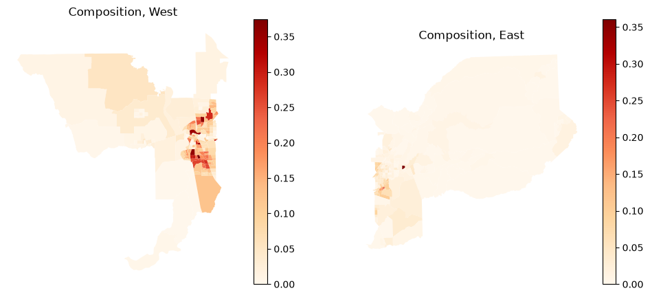
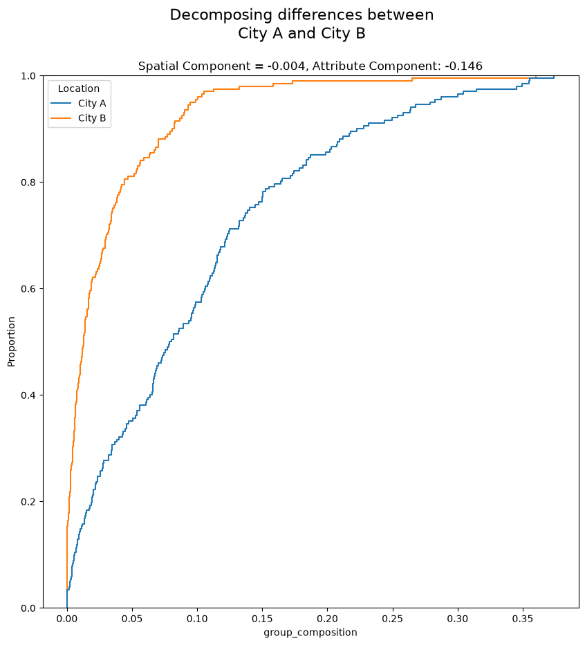
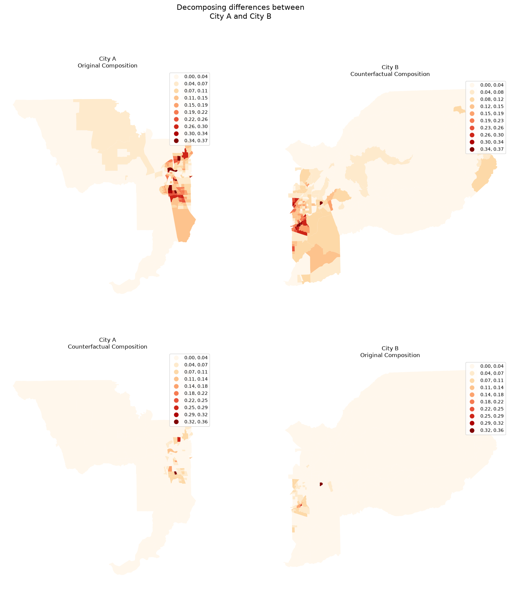
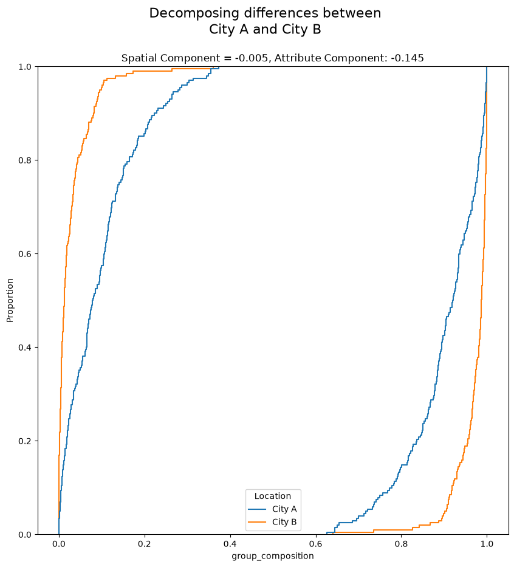
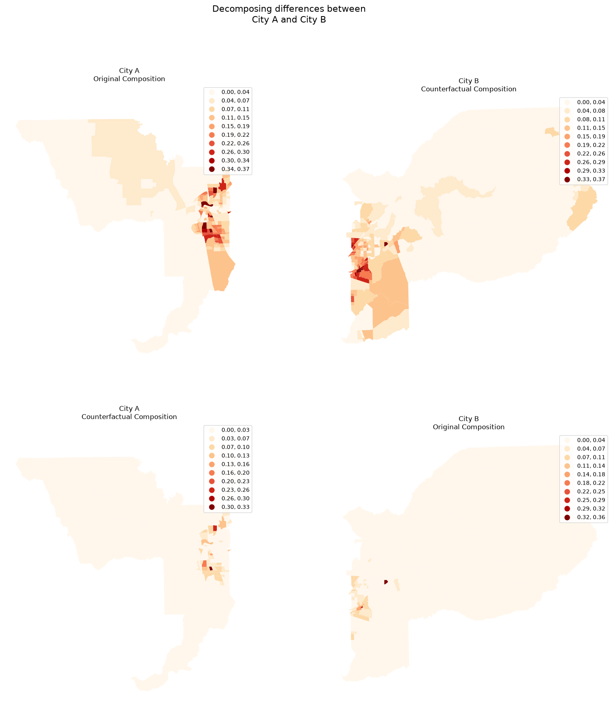

Segregation Index Decomposition¶
This notebook walks through the decomposition framework of the PySAL segregation package, which breaks the difference between two comparative segregation measures into a spatial component (c_s) and an attribute component (c_a), following Rey, S. et al. “Comparative Spatial Segregation Analytics”.
To keep the example self-contained we use the Sacramento demonstration dataset bundled with libpysal and compare segregation between the western and eastern halves of the region.
Table of Contents¶
Data preparation¶
First, import the needed libraries.
import numpy as np
import geopandas as gpd
import matplotlib.pyplot as plt
from libpysal.examples import load_example
from segregation.singlegroup import Gini, RelativeConcentration
from segregation.decomposition import DecomposeSegregation
Read the Sacramento tracts and reproject them into an appropriate projected CRS so that distance-based operations behave well.
sacramento = gpd.read_file(load_example("Sacramento1").get_path("sacramentot2.shp"))
sacramento = sacramento.to_crs(sacramento.estimate_utm_crs())
We study the segregation of the non-Hispanic Black population (BLACK) relative to the total population (TOT_POP). To obtain two contexts to compare, we split the region into a western and an eastern half at the median tract-centroid longitude.
sacramento["cx"] = sacramento.geometry.centroid.x
split = sacramento["cx"].median()
west = sacramento.loc[sacramento["cx"] <= split].copy()
east = sacramento.loc[sacramento["cx"] > split].copy()
len(west), len(east)
(202, 201)
The composition of the focal group in each context:
fig, axes = plt.subplots(1, 2, figsize=(12, 5))
for ax, gdf, title in zip(axes, [west, east], ["West", "East"]):
gdf["composition"] = np.where(gdf["TOT_POP"] == 0, 0, gdf["BLACK"] / gdf["TOT_POP"])
gdf.plot(column="composition", cmap="OrRd", legend=True, ax=ax)
ax.set_title(f"Composition, {title}")
ax.axis("off")

We first compare the Gini segregation index of both contexts and check the difference in point estimates.
G_west = Gini(west, "BLACK", "TOT_POP")
G_east = Gini(east, "BLACK", "TOT_POP")
G_west.statistic - G_east.statistic
-0.14982076377179188
The options available for the decomposition are documented on the DecomposeSegregation class:
help(DecomposeSegregation)
Help on class DecomposeSegregation in module segregation.decomposition.decompose_segregation:
class DecomposeSegregation(builtins.object)
| DecomposeSegregation(index1, index2, counterfactual_approach='composition')
|
| Decompose segregation differences into spatial and attribute components.
|
| Given two segregation indices of the same type, use Shapley decomposition
| to measure whether the differences between index measures arise from
| differences in spatial structure or population structure
|
| Parameters
| ----------
| index1 : segregation.SegIndex class
| First SegIndex class to compare.
| index2 : segregation.SegIndex class
| Second SegIndex class to compare.
| counterfactual_approach : str, one of {"composition", "share", "dual_composition"}
| The technique used to generate the counterfactual population
| distributions.
|
| Attributes
| ----------
| c_s : float
| Shapley's Spatial Component of the decomposition
| c_a : float
| Shapley's Attribute Component of the decomposition
| indices : dict
| Dictionary of index values for all four combinations of spatial/attribute data
|
| Methods defined here:
|
| __init__(self, index1, index2, counterfactual_approach='composition')
| Initialize class.
|
| plot(
| self,
| plot_type='cdfs',
| figsize=None,
| city_a=None,
| city_b=None,
| cmap='OrRd',
| scheme='equalinterval',
| k=10,
| suptitle_size=16,
| title_size=12,
| savefig=None,
| dpi=300
| )
| Plot maps or CDFs of urban contexts used in calculating the Decomposition class.
|
| Parameters
| ----------
| plot_type : str, {'cdfs, 'maps'}
| which type of plot to generate. Options include `cdfs` and `maps` by default "cdfs"
| figsize : tuple, optional
| figsize parameter passed to matplotlib.pyplot
| city_a : str, optional
| Name of the first "city" to be used in plotting. If None, defaults to 'City A'
| city_b : str, optional
| Name of the second "city" to be used in plotting. If None, defaults to 'City B'
| cmap : str, optional
| matplotlib colormap used to shade the map, by default "OrRd"
| scheme : str, optional
| pysal.mapclassify classification scheme used to shade the map, by default "equalinterval"
| k : int, optional
| number of classes in pysal.mapclassify classification scheme, by default 10
| suptitle_size : int, optional
| size parameter passed to `matplotlib.Figure.suptitle`, by default 16
| title_size : int, optional
| size parameter passed to `matplotlib.Axes.set_title`, by default 12
| savefig : str, optional
| Location to save the figure if desired. If None, fig will not be saved
| dpi : int, optional
| dpi parameter passed to matplotlib.pyplot, by default 300
|
| Returns
| -------
| None
| Generates a new matplotlib.Figure instance and optionally saves to disk
|
| ----------------------------------------------------------------------
| Data descriptors defined here:
|
| __dict__
| dictionary for instance variables
|
| __weakref__
| list of weak references to the object
Composition Approach (default)¶
The difference fitted above can be decomposed into a spatial component (c_s) and an attribute component (c_a). Let’s estimate both.
DS_composition = DecomposeSegregation(G_west, G_east)
DS_composition.c_s
-0.004081335971322875
DS_composition.c_a
-0.145739427800469
Whichever component has the larger absolute value contributes more to the observed difference. The difference in composition can be inspected with the cdfs plot type:
DS_composition.plot(plot_type="cdfs")
<Axes: title={'center': 'Spatial Component = -0.004, Attribute Component: -0.146'}, xlabel='group_composition', ylabel='Proportion'>

When the underlying data are GeoDataFrames, the counterfactual compositions can also be mapped. The first and second contexts are West and East, respectively.
DS_composition.plot(plot_type="maps")
array([[<Axes: title={'center': 'City A\nOriginal Composition'}>,
<Axes: title={'center': 'City B\nCounterfactual Composition'}>],
[<Axes: title={'center': 'City A\nCounterfactual Composition'}>,
<Axes: title={'center': 'City B\nOriginal Composition'}>]],
dtype=object)

In every plotting method, the title reports each component of the decomposition.
Dual Composition Approach¶
The dual_composition approach is similar to the default composition approach, but it also uses the counterfactual composition of the complementary group.
DS_dual = DecomposeSegregation(G_west, G_east, counterfactual_approach="dual_composition")
DS_dual.plot(plot_type="cdfs")

DS_dual.plot(plot_type="maps")
array([[<Axes: title={'center': 'City A\nOriginal Composition'}>,
<Axes: title={'center': 'City B\nCounterfactual Composition'}>],
[<Axes: title={'center': 'City A\nCounterfactual Composition'}>,
<Axes: title={'center': 'City B\nOriginal Composition'}>]],
dtype=object)

Inspecting a different index: Relative Concentration¶
The decomposition works with any comparative pair of indices of the same type. Here we repeat it with the spatial RelativeConcentration index, where the spatial component typically plays a larger role.
RCO_west = RelativeConcentration(west, "BLACK", "TOT_POP")
RCO_east = RelativeConcentration(east, "BLACK", "TOT_POP")
RCO_west.statistic - RCO_east.statistic
np.float64(-0.0736831792670124)
RCO_decomp = DecomposeSegregation(RCO_west, RCO_east)
RCO_decomp.c_s
np.float64(0.034647684743961404)
RCO_decomp.c_a
np.float64(-0.1083308640109738)